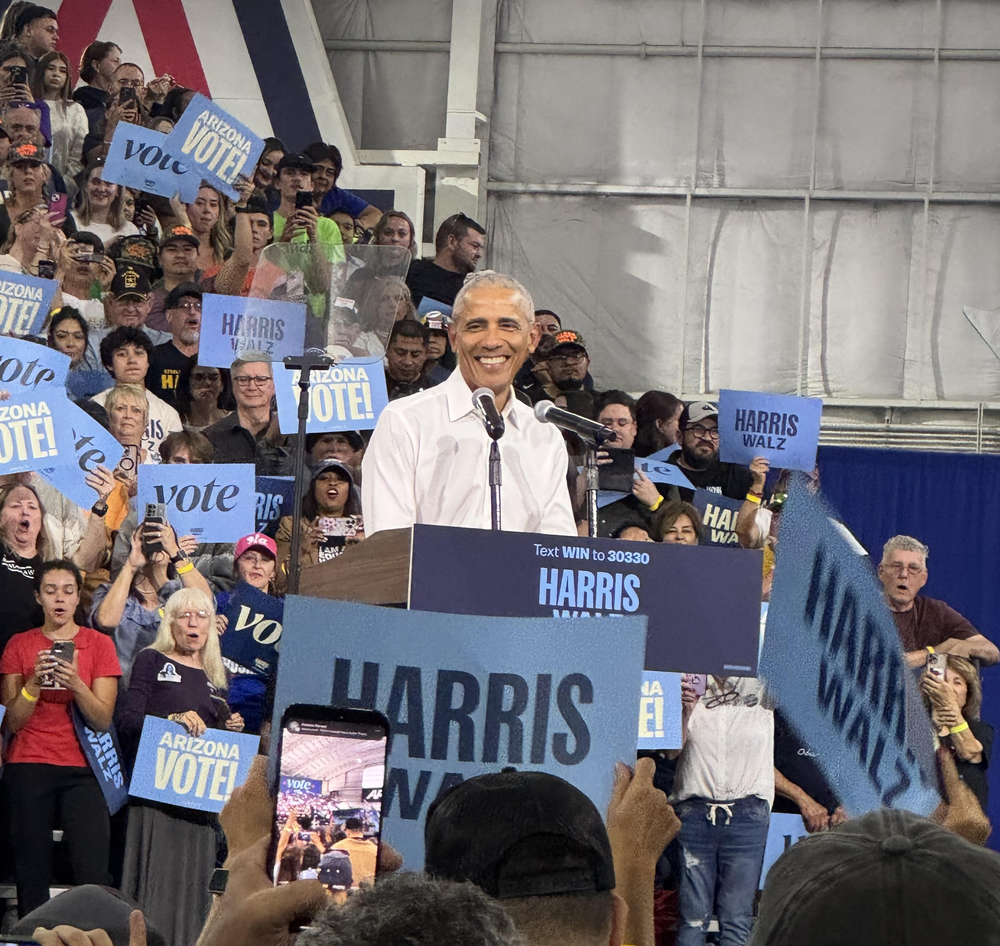
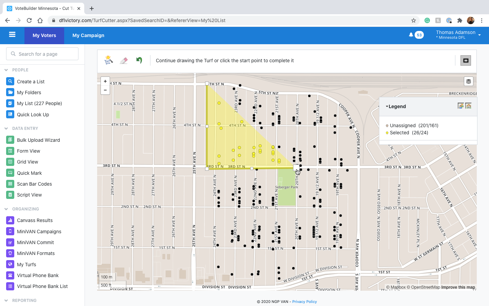

Throughout the 2024 election season, I acted as a Deputy Data Director for the Democratic National Committee for their Arizona Coordinated Campaign. This work largely focused on utilizing tools such as Votebuilder, HEX, and dbt to create actionable insights for the campaign's field organizers and leadership.
Near the beginning of the season, the primary focus of our team was to faciliate the data-needs for large-scale events across the state of Arizona. These ranged from small meet-and-greets to large rallies with tens of thousands of attendees. For these events, I worked to create automated data-pipelines that would intake attendee and survey information to create a comprehensive post-event report that would be utilized throughout the rest of the campaign season to drive strategic decisions regarding voter outreach and engagement. This work was done utilizing a combination of SQL, Python, and dbt. This was deployed on the field for various campaign events, including a rally with Vice President Kamala Harris in Phoenix and an event in Tucson with former president Barack Obama.

As the campaign season progresed, the needs of the campaign evolved. We would eventually shift our focus from large-scale events to more localized voter outreach efforts, such as canvassing and phonebanking. This requires a large amount of manual work to be done to cut 'turf-maps' for our field organizers, which would be utilized to direct their outreach efforts. These turf-maps would be created utilizing VoteBuilder, a CRM used by political campaigns to manage their voter data and outreach efforts. To create turf-maps for the entire state of Arizona, I led a team of volunteers and data associates to create these turf-maps, taking into account factors such as geography, voter demographics, and past voting behavior to create maps that would be utilized by our organizers while on the field.

Turf being cut within NGP VoteBuilder (VAN).
As our volunteers and workers were deployed to canvass and phonebank, our team needed an automatic way to utilize VoteBuilder data to build printable walk lists for our field organizers. In previous years, this process had been done manually, with organizers having to manually input data into VoteBuilder to create walk lists for their teams. This process was not only time consuming, taking upwards of a weeks worth of organizer time, but also prone to human error, which could lead to volunteers being sent to the wrong locations or missing out on important voter information.
To solve this problem, I created a piece of automation software that would organizer data and insert it into VoteBuilder, creating the walk lists automatically. This process was done utilizing a combination of SQL, Python, Selenium, and Web APIs to pull the necessary data in, transform it, and push it into VoteBuilder to create printable PDF files. This reduced a week-long, all-hands-on-deck process into a 30-minute, fully automated background process that allowed our organizers to focus on their outreach efforts rather than manual data entry. This process was utilized throughout the rest of the campaign season, allowing our field organizers to have up-to-date walk lists that they could utilize to drive their outreach efforts.